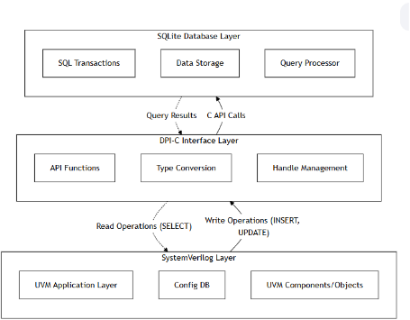
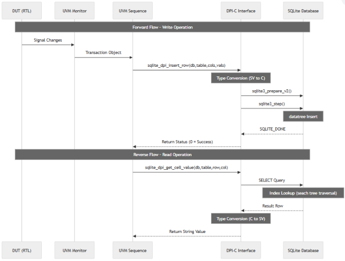
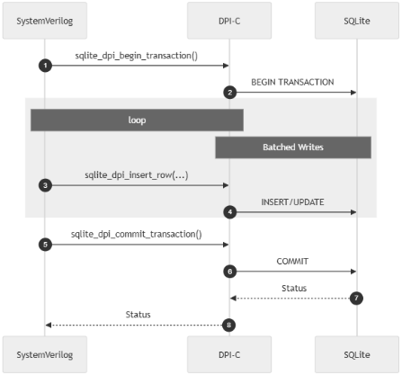
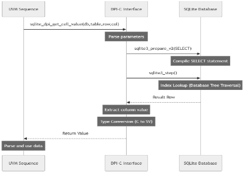
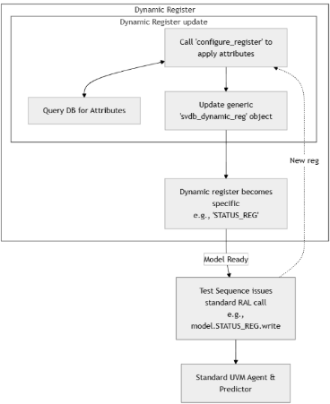

数据库驱动的 RTL 仿真：对抗十亿门级验证瓶颈
随着 AI ASIC 规模突破十亿门，RTL 仿真运行时间急剧增长，验证瓶颈集中在超大静态 UVM RAL 寄存器模型、config_db 字符串/正则查找、海量事务日志以及仿真/emulation/FPGA 多平台验证数据割裂等数据存储与检索环节。论文提出开源 SVDB Gateway：一个 SystemVerilog DPI-C 库，在仿真运行时把验证数据卸载到外部 SQLite 数据库，采用 SV 层、DPI-C 接口层、数据库引擎层的三层架构，通过事务批处理、索引查询与惰性加载的动态 RAL 降低内存占用并提升吞吐。在约 70,000 寄存器的 PCIe AI ASIC 用例中，寄存器字段内存降低 94%，编译时间降低 39%，仿真时间降低 36%；config_db 卸载使配置操作提速 144-160 倍，事务日志吞吐提升 80-250 倍。该方案基于标准 DPI-C、与仿真器无关、可回退静态 RAL，并支持跨 run 回归分析与 CI/CD 集成，但论文明确其只适用于数据存储与检索为主要瓶颈的场景。
AI ASIC 设计规模超过十亿门后，传统 RTL 仿真运行时间呈指数增长，验证生产力受限于四类数据瓶颈：过长仿真运行时间、海量日志与波形文件、多平台（仿真/emulation/FPGA 原型）结果格式割裂、覆盖率收敛缓慢。具体表现为：静态 UVM RAL 为每个 field/register/block 预实例化全部类对象，寄存器模型主导类数量并拖累内存与编译；uvm_config_db/uvm_resource_db 基于字符串与通配符正则的 scope 匹配随参数规模扩展性差且无法跨 run 持久化；文件式事务日志吞吐低、事后分析需对海量 trace 做随机访问；仿真 UCDB、emulation 私有格式、gcov C 覆盖率、FPGA trace 缺乏统一 schema，跨方法学对比与自动化分析困难。
提出 SVDB Gateway 开源 SystemVerilog DPI-C 库，在仿真运行时将验证数据卸载到外部 SQLite 数据库，实现计算与存储分离。架构分三层：SV 层（UVM 应用模型、config 数据库、coverage collector、序列）、DPI-C 接口层（SV/C/SQLite 自动类型映射、按读写与事务分类的 API）、SQLite 引擎层（磁盘存储与事务控制）。关键技术手段：事务批处理（sqlite_dpi_begin_transaction 合并多次插入，吞吐从数百次/秒提升至 50,000-100,000 次/秒）；索引优化（主键索引查询微秒级，较未索引快最高 100 倍）；数据库驱动动态 RAL（寄存器定义存于 SQLite，configure_register() 在 build 阶段按需把通用 svdb_dynamic_reg 模板实例化为具体寄存器，coverage 与 factory 注册仅对被访问寄存器执行，通过 override uvm_reg 方法保持标准 RAL API，并提供模式选择器可回退静态 RAL）；IP-XACT 经 Python 脚本转换为 SQLite，实现寄存器规格与仿真分离，无需重编译即可切换寄存器 map 或硅版本。方案仅依赖标准 DPI 与 SQLite，兼容所有商业仿真器及 Verilator。
约 70,000 寄存器的 PCIe AI ASIC 用例：寄存器字段内存从 141.47 MB 降至 7.99 MB（降低 94%）；编译时间从 37 分钟降至 22 分钟（降低 39%）；运行时间从 6.4 小时降至 4.1 小时（降低 36%）；峰值内存从 24.62 GB 降至 21.27 GB（降低 13%）；测试平台为 2 TB RAM、双 Intel Xeon Gold 6248R
事务批处理将插入吞吐从每秒数百次提升至 50,000-100,000 次/秒；单次立即提交插入约 10 ms，批处理后降至数十微秒
索引查询较未索引查询最高快 100 倍；百万行表上主键索引查询为微秒级，全表扫描需数秒
UVM config_db：5,000 次带通配符的 set/get 操作约需 200 秒，外部数据库方案仅需 2-3 秒；10,000 次操作从超过 6 分钟降至 2-3 秒；20,000-30,000 次配置调用在 build 阶段造成 20-30 分钟延迟
配置数据卸载综合收益：存储降低 79-80%（每仿真实例节省 1.04-5.2 MB，每 1,000 run 回归节省 1-5 GB）；build 阶段配置部分改善 98-99%（20-30 分钟降至 12-18 秒）；整体 build 时间从 2-4 小时降至 15-30 分钟；进程内存降低 40-60%（5-8 MB 降至 2-4 MB，1,000 并行仿真节省 1-4 GB）；配置操作提速 144-160 倍（50,000 次操作从 2,000 秒降至 125 秒）；配置密集型 testbench 整体仿真时间改善 5-15%；每 100 测试回归周期节省 240-400 CPU 小时，build 与仿真总时间改善 20-25%
事务日志：传统文件方式约 60 ops/s，优化 SQLite 达 5,000-15,000 ops/s，提升 80-250 倍
开销基线：DPI-C 基本操作 0.25-0.35 ms、复杂操作 0.4-0.7 ms；DPI-C+SQLite 组合读 0.4-0.7 ms、写 0.4-1.2 ms；数据库引擎页缓存仅数 MB，CPU 内存占用与数据库规模无关
区别于主流仿真器优化手段（多线程、checkpoint/restart、分布式仿真）只针对计算与执行模式，本方法直接针对数据量问题：把存储与检索移到运行时外部数据库，使内存占用随实际寄存器使用而非总寄存器数量扩展，以索引查询替代正则匹配与顺序文件扫描；同时利用外部数据库的持久化实现跨 run 回归分析、CI/CD 集成与趋势报告，并以统一 schema 打通仿真/emulation/C 覆盖率/FPGA 等多来源数据，实现 vendor 无关的 SQL 查询。方案基于标准 DPI-C，不绑定任何仿真器，且通过模式选择器保证与现有静态 RAL 流程共存。
相关度级别：high
命中能力域：2.4 设计验证方法学 | 2.6 仿真性能与加速器 | 2.7 EDA/验证自动化与 AI 辅助
理由：团队交付 LPDDR4/4X 至 LPDDR6、DDR5/MRDIMM、HBM4、UCIe 等存储与互连 IP，其 UVM 环境普遍存在论文点名的四类瓶颈：memory controller/PHY 类 IP 寄存器数量庞大导致静态 RAL 拖累编译与内存；多协议/多配置 testbench 的 config_db 调用密集、build 阶段正则匹配开销大；长回归中 monitor/scoreboard 事务日志量大且失败 triage 依赖人工文本分析；仿真、emulation、FPGA 原型覆盖率格式割裂阻碍跨平台收敛。SVDB 直接命中 2.4 的 UVM 平台与回归/调试方法学、2.6 的仿真吞吐与大规模回归优化、2.7 的验证流程自动化与可复用开源验证基础设施，且基于标准 DPI-C、可回退静态 RAL，接入现有环境的工程风险低。
建议动作：深入精读并做内部分享
Victor Besyakov BTA Design Service，IC Verimeter，加拿大渥太华
摘要——随着人工智能（AI）专用集成电路（ASIC）设计规模扩展至数十亿门以上，传统RTL（寄存器传输级）仿真的运行时间呈指数级增长。漫长的执行时间延长了调试周期并拖慢了测试回归，从而显著降低了验证效率。本文介绍SVDB Gateway，这是一个开源的SystemVerilog（SV）C语言直接编程接口（DPI-C）库，可在运行时将验证数据卸载至外部SQLite数据库。该方法降低了内存占用，提升了编译速度，并提高了以数据为中心的验证任务的仿真吞吐量。该解决方案专门用于解决寄存器管理、配置数据库、事务日志记录和回归数据分析中的基础设施瓶颈，在这些场景中，数据存储与检索是主要的性能制约因素。它提供了一种可扩展的数据管理解决方案，只需对现有通用验证方法学（UVM）验证平台基础设施进行极少修改。
人工智能（AI）工作负载在神经网络训练和实时推理中都需要对海量数据集进行并行处理。现代 AI 加速器每个时钟周期必须比传统片上系统（SoC）处理更多的数据。当被集成到系统级封装（system-in-package）设计或多芯片系统中时，它们应将通信开销降至最低。因此，当代器件集成了异构的第三方 IP 模块、大规模的并行计算单元阵列以及复杂的分层片上网络（NoC），同时还集成了同时包含片上与片外组件的多级存储系统 [1][2][3][4]。
这些趋势推动 AI 专用集成电路（ASIC）在规模和复杂度上不断增长。增加更多的并行计算单元和更大的数据缓冲区，会使设计规模超越传统极限。芯粒（Chiplet）集成通过使多个 tile 能够协同工作、而不受单一单片式裸片限制的方式，满足了这些需求。这种规模与模块化的结合，使数十亿门级的多 tile AI ASIC 成为当今最严苛工作负载的行业标配。这种架构上的复杂性直接转化为根本性的验证挑战。
AI ASIC 的规模不断增长，达到数十亿门级容量，使传统的寄存器传输级（RTL）仿真逼近其极限。瓶颈主要来自四个方面：仿真运行时间过长、日志与波形文件过于庞大、多平台结果碎片化，以及覆盖率收敛缓慢 [5][6][7]。
大型设计的仿真可能持续数天甚至数周，产生 TB 量级的日志与波形数据。仿真、硬件仿真（emulation）与 FPGA 原型验证的结果格式各不相同，使跨平台比较变得困难。覆盖率收敛之所以缓慢，是因为多组件之间的交互使许多覆盖率点难以命中 [6][8][9]。软硬件协同验证还引入了来自固件的非确定性。这可能使先前已收敛的覆盖率重新打开，并延长调试周期。
这些累积的问题导致设计复杂度超越验证能力的局面。这种失衡被称为验证生产力鸿沟 2.0（Verification Productivity Gap 2.0）[7][8]。这一鸿沟的证据十分明显：如今有更多设计需要重新流片（respin）。最近的一项调查显示，芯片一次流片成功的比例已从历史上的约 30% 降至 14% [6]。
外部数据库卸载为验证可扩展性提供了一种根本不同的方法。卸载不是在仿真内存中管理数据或将其转储到文件中，而是在运行时将存储和检索操作转移到外部数据库。这使仿真进程保持精简，降低了内存压力，并支持通过索引查询而非顺序文件扫描来实现高效的数据访问。在大型设计中，数据管理是一项显著的性能约束。本文考察了若干具体示例：超大规模寄存器模型、海量事务日志、UVM 配置数据库操作以及多源验证数据。每个示例都带来了标准仿真框架难以解决的独特挑战。
大型寄存器模型由于静态实例化模式而消耗大量内存。传统的 UVM 寄存器抽象层（RAL）[16] 通过为每个字段、寄存器和块创建专用的类对象来构建完整的寄存器层次结构。拥有大量寄存器字段的复杂 SoC 无论测试需求如何都会预先实例化所有对象。仅工厂（factory）机制在管理大量类时就会引入可观的开销。仿真性能因此受损，因为未使用的寄存器对象在整个执行期间占用内存，既增加了进程内存消耗，也延长了编译时间。在寄存器模型占据类数量主导地位并使仿真器资源紧张的设计中，这一问题变得尤为关键。
UVM 配置数据库则呈现出另一种数据访问问题。配置操作依赖于基于字符串的查找和通配符作用域匹配，需要对所有条目进行正则表达式求值 [27]。随着设计中包含的配置参数不断增多，这些查找在数据量增大时表现出糟糕的扩展性。仅仅处理配置的 set 和 get 操作，build 阶段的延迟就可能延长很长时间。除运行时开销外，配置数据仅在仿真期间存在，无法在多次测试运行之间进行比较，也无法为审计而保存。
海量事务日志对 I/O 和存储系统造成压力。仿真产生的事务量以百万条计。传统的基于文件的日志记录只能达到有限的吞吐量，形成存储瓶颈。写操作同时消耗磁盘带宽和容量。仿真后分析需要对海量跟踪文件进行随机寻址访问，每次访问都会产生延迟成本。随着验证规模的扩大，事务量在各个回归测试套件中不断累积，消耗大量存储空间。
多源验证数据带来了集成方面的挑战。仿真以一种格式生成覆盖率文件，硬件仿真（emulation）产生专有格式，C 代码覆盖率来自不同的工具，而 FPGA 结果则以跟踪捕获（trace capture）的形式呈现。这些数据源之间不存在统一的模式（schema）。分散于各验证方法学的覆盖率数据使跨方法学比较耗费人力，并阻碍了自动化分析。
主要仿真厂商采用多线程、检查点/重启（checkpoint/restart）框架以及分布式仿真等性能优化策略来降低内存和计算开销。然而，这些技术针对的是计算和执行模式，而非底层数据量问题。它们既不能降低根本性的内存占用，也无法为可能在单次仿真运行之后仍需持久保存的验证数据提供高效的数据访问。
数据库驱动的方法通过一种不同的机制解决了这些问题。将寄存器定义卸载到外部存储可实现惰性加载（lazy loading），即对象仅在运行时被访问时才进行实例化。内存占用随实际寄存器使用量而非寄存器总数而伸缩。配置数据被移至索引数据库，从而消除正则表达式（regex）开销，并使数据库查询能够快速执行。事务日志从基于文件的序列转变为规范化的数据库表，支持并发读取，并可支持显著更高的操作吞吐量。多源验证数据映射到通用数据库模式，从而能够跨所有覆盖率来源和验证方法学执行与厂商无关的查询。外部数据库还提供持久化能力，支持跨运行回归分析、自动化的持续集成/持续部署（CI/CD）集成以及趋势报告，而无需对仿真器进行任何修改。
SVDB Gateway [15] 在 SystemVerilog 验证环境与外部 SQLite [20] 数据库之间提供了一个垫片层（shim layer）桥接。本节简要概述 SVDB 的架构、组件交互以及数据流机制。有关详细信息和实现指南，请参阅 SVDB Gateway GitHub 仓库中提供的在线文档 [15]。有关数据库特性及技术细节的更多信息，可在 SQLite 官方网站上查阅 [20]。请注意，所有以 <sqlite3> 前缀开头的函数均来自 SQLite C 接口 [20]。
SVDB Gateway 实现了三层架构：SystemVerilog（SV）层、DPI-C 接口和数据库引擎。每一层执行特定的功能，并与其他层清晰分离。该设计使验证数据能够从寄存器传输级（RTL）仿真出发，经过测试平台，最终进入外部数据库（图 1）。

SV 层包含通用验证方法学（UVM）测试平台组件，例如应用模型、配置数据库、覆盖率收集器和测试序列。这些组件通过采用标准 SystemVerilog 语法的 DPI-C 函数调用与外部数据库进行交互 [17]。
DPI-C 接口在 SV 与 C 之间架起桥梁。其 API 将 SV 调用映射为 SQLite 操作 [20]，使使用者无需了解 C API 或 SQL 即可使用数据库。该接口还能在 SV 与 C 之间自动转换数据类型 [17]。
SQLite 是一个轻量且可靠的数据库引擎。它无需独立的服务器即可运行，也不需要进行数据库管理。其数据库文件与所有主流操作系统兼容 [20]，从而使结果能够在不同主机之间共享。
该架构在三层之间实现了清晰的职责分离。SV 层负责测试激励与检查。DPI-C 接口管理数据转换和 API 调用。数据库引擎层提供磁盘存储和事务控制。采用标准 SV DPI-C 使该解决方案独立于任何单一仿真器。它可配合所有商用仿真器以及 Verilator 等开源工具使用 [18][15]。
DPI-C 接口层实现了 SV 与 SQLite 之间的转换机制。该接口设计的重点是在跨越语言边界时保持数据完整性的同时，将开销降至最低。
API 根据数据流方向和操作类型将函数划分为若干类别。表 I 总结了按类别和数据流方向组织的主要 DPI-C 函数。数据库连接管理控制数据库会话的生命周期。写操作将数据从 SV 传输到数据库中。读操作从数据库中检索数据并将其返回给 SV。事务控制函数管理跨多个操作的属性 [19]。
| Category | Function Name | Purpose | Data Flow Direction |
|---|---|---|---|
| Connection | sqlite_dpi_open_database() | Establish database connection | SV → C → SQLite |
| Management | sqlite_dpi_close_database() | Close database connection | SV → C → SQLite |
| Write Operations | sqlite_dpi_insert_row() | Insert data into table | SV → C → SQLite |
| sqlite_dpi_execute_query() | Execute SQL statement | SV → C → SQLite | |
| Read Operations | sqlite_dpi_get_row() | Retrieve complete row | SQLite → C → SV |
| sqlite_dpi_get_cell_value() | Retrieve single cell value | SQLite → C → SV | |
| sqlite_dpi_get_rowid_by_column_value() | Find row ID by value | SQLite → C → SV | |
| Transaction Control | sqlite_dpi_begin_transaction() | Start transaction | SV → C → SQLite |
| sqlite_dpi_commit_transaction() | Commit changes | SV → C → SQLite | |
| sqlite_dpi_rollback_transaction() | Revert changes | SV → C → SQLite |
| Category | Function Name | Purpose | Data Flow Direction |
DPI-C 层实现了 SV 数据类型与 SQLite 兼容格式之间的自动类型映射。这一转换过程在语言边界处透明地进行，确保数据在层间流动时保持语义等价。表 II 展示了支配数据转换的类型映射关系。每个 SV 类型在 DPI-C 边界处映射为特定的 C 类型，该边界随后再映射为相应的 SQLite 存储类型。
该表仅表示基本的数据映射。更复杂的数据映射超出了 SVDB 框架的范围。可以基于基本事务类型构建自定义映射方案。实现细节请参阅 SVDB [15] 示例目录。
| SV Type | DPI-C Type | SQLite Type | Data Flow Notes |
|---|---|---|---|
| Int | int | INTEGER | Direct mapping, 32-bit signed |
| String | const char* | TEXT | Null-terminated C string |
| bit[N:0] | unsigned char* | BLOB | Binary data, requires size parameter |
| Chandle | void* | N/A | Pointer for DB handle |
| Byte | char | INTEGER | 8-bit signed value |
| Shortint | short | INTEGER | 16-bit signed value |
| Longint | long long | INTEGER | 64-bit signed value |
| Real | double | REAL | IEEE 754 double precision |
| SV Type | DPI-C Type | SQLite Type | Data Flow Notes |
图 2 展示了前向数据流路径。当被测设计（DUT）产生信号跳变或寄存器变化时，该流程便开始。通用验证方法学（UVM）监视器捕获这些跳变并构建事务对象。监视器通过事务级建模（TLM）分析端口，采用标准 UVM 通信机制将事务发送给订阅者。
事务订阅者接收事务对象并提取相关的数据字段。订阅者将这些数据格式化为合适的数据类型，以便作为输入传递给直接编程接口（DPI-C）函数。
订阅者调用相应的 DPI-C 函数将数据存储到数据库中。例如，对于事务日志记录，它会调用 sqlite_dpi_insert_row()，其参数包括数据库句柄、表名、列规范和值规范。该函数调用从 SystemVerilog（SV）跨越 DPI-C 边界进入 C。
类型转换在边界处自动完成，如表 II 所示。C 实现解析字符串形式的 SQL 查询参数，以提取各个列名和值。C 层使用 SQLite 的 API 构建 SQL 语句（详情参见图 2 中 DPI-C 与 SQLite 的交互以及 SQLite 文档 [20]）。
执行过程会返回一个指示成功或失败的状态码。C 实现检查该状态并将其转换为 DPI-C 返回值。该返回值跨越 DPI-C 边界传播回 SV。SVDB 检查返回状态并实现错误处理逻辑。

DPI-C 层将事务归组为单个批次以完成处理（见图 3）。批处理通过将多次行插入合并为单一操作，降低了磁盘同步开销。
对于 SQLite 写操作，事务以 sqlite_dpi_begin_transaction() 开始。所有写操作持续执行，直至调用提交（commit）为止。数据库引擎将数据刷新到磁盘，并通过 DPI-C 返回一个状态码以供错误处理。

反向数据流路径支持数据库查询与数据检索。UVM 组件调用 DPI-C 查询函数以从外部存储中检索数据。如图 4 所示，读操作始于 SV 代码调用诸如 sqlite_dpi_get_cell_value() 之类的查询函数。函数参数指定目标数据的位置（表名、行标识符和列名）。该调用跨越 DPI-C 边界进入 C 层。
C 层根据参数构造语句。对于单元格级查询，该语句从由主键标识的特定行中检索单个列值。有关详细信息和实现指导，请参阅 SVDB Gateway GitHub 仓库中提供的在线文档 [19]。与全表扫描相比，这种针对性访问可将数据传输量降至最低。语句准备过程与写操作相同。C 实现调用 sqlite3_prepare_v2() 来编译 SELECT 语句。SQLite 的查询优化器分析该语句并生成执行计划。查询执行通过 sqlite3_step() 进行。SQLite 遍历数据树结构以定位所请求的数据。结果提取在成功执行后进行。
随后，类型转换将 SQLite 结果转换为与 DPI-C 兼容的格式。对于字符串结果，C 层构造一个以空字符结尾的字符数组。对于数值结果，则执行类型转换以匹配预期的返回类型。结果值跨越 DPI-C 边界返回至 SV。调用代码接收返回值并继续处理。

该架构的性能特性源于三个层次之间的交互以及在各层级所应用的优化策略。若干优化策略可提升数据流性能。这些优化在保持数据完整性与一致性的同时，降低了各层的开销 [20][22]。例如，事务批处理将多个数据库操作归组到单个 SQLite 事务中。它减少了将数据同步到磁盘的昂贵操作。批处理将吞吐量从每秒数百次操作提升到每秒数万次。索引优化可加速查询操作。对于大型数据库，带索引的查询可比无索引的查询快达 100 倍。SQLite 架构支持在写操作期间进行并发读访问。多个验证线程可以查询数据库，同时另一个线程执行插入操作。
测量结果表明，在与十亿门级验证相关的关键领域具有具体的收益。数据库连接开销被分摊到整个仿真运行期间。打开数据库连接需要毫秒级时间，但该成本仅在仿真启动时发生一次。该连接在整个测试期间保持打开，使数千次操作得以分摊初始化成本。插入操作的延迟取决于事务模式。由于磁盘同步，采用立即提交的单次插入大约需要 10 毫秒。事务内的批量插入将每次操作的延迟降低到数十微秒，实现每秒 50,000 至 100,000 次插入的吞吐量 [23][24]。查询操作的延迟取决于索引和结果集大小。基于主键的带索引查询可在微秒内完成。无索引的表扫描随表规模线性扩展。对于拥有一百万行的表，带索引的查找只需微秒，而全表扫描则需要数秒 [20][22]。
与仿真相比，内存开销极小。数据库引擎维护一个最近访问页面的缓存，其大小通常为几兆字节。无论数据库大小如何，中央处理器（CPU）的内存总占用量保持恒定。随着设计规模的增大，数据库大小呈线性增长。查询性能保持恒定，因为 SQLite 内置的索引管理无论数据量大小都能保持高效的数据检索。
UVM 寄存器抽象层（RAL）为复杂片上系统（SoC）中的寄存器验证提供了不可或缺的能力。然而，传统实现在扩展至十亿门级设计时面临重大挑战。本节分析了这些局限性，并提出了一种数据库驱动的动态 RAL 方法，该方法利用 SQLite 进行运行时寄存器管理，同时保持与 UVM 的兼容性。下一小节将详细介绍这一概念的实现。该实现直接基于 SVDB Gateway git 仓库[15]中提供的示例。
传统 RAL 依赖于整个寄存器模型的静态生成。这种方法适用于较小的设计，但当寄存器数量超过数万时便会产生低效问题。静态寄存器模型生成通过一次性实例化所有寄存器而造成瓶颈。在复杂的 SoC 中，“模型中很容易就会有数万个寄存器字段”，其中每个字段、寄存器和块（block）都需要专用的类。这种方法遵循标准 UVM 准则，但由于模型无论测试需求如何都必须处理完整的层次结构，因而会导致“显著的加载和构建时间性能损失”。其结果是，验证环境会加载未使用的寄存器，从而降低整体效率 [11]。
对于大型模型而言，“由于每个字段、寄存器和层次化块都由类来定义，寄存器模型中的 SystemVerilog（SV）类数量往往远多于验证环境的其余部分”。这样的规模相较于没有完整模型的环境，会造成“显著的加载和构建时间性能损失”。在实践中，将其用于数千个寄存器的后门（backdoor）加载，会显著增加编译和运行时间 [10][11]。
仅工厂（factory）机制本身就会引入可观的代价，因为“工厂在处理大量类方面所起的作用”会给一万多个字段带来额外开销。静态模型会在整个仿真期间将所有寄存器对象保留在内存中，即使其中大多数始终未被使用。正如行业论坛中所记录的，“仿真性能会受到 uvm_reg env 的严重影响”，进程内存消耗出现可测量的增长。对于寄存器模型在类数量上占主导地位的 SoC 而言，这一问题变得尤为关键，会使仿真器资源趋于紧张 [10][11]。
数据库驱动方法将寄存器数据迁移至外部 SQLite 存储。这使得动态加载能够与实际测试需求保持一致，从而同时提升性能与可维护性。
惰性加载（lazy-loading）模型将对象的创建延迟到其被访问之时。寄存器模型并非一次性构建完整的寄存器层次结构，而是在运行期间按需对其进行配置。SQLite 采用一种能够捕获地址、字段和属性的模式（schema）来存储寄存器定义。SVDB Gateway 的 DPI-C 接口提供针对性访问，用于从外部 SQLite 数据库中检索特定数据。
内存占用优化技术通过避免不必要的组件来提升效率。覆盖率与工厂注册仅针对被访问的寄存器执行，从而消除了与完整实例化相关的不必要开销。对于大型模型，该方法通过去除静态模型开销来缩短编译与运行时间。在实践中，“根据测试所需覆盖的功能特性，一次测试中我们可能只需要这些寄存器中的 10-20%” [12]，这使得运行时内存使用量能够随实际的寄存器访问模式而伸缩，而非随完整模型的实例化而伸缩。
图 5 展示了动态寄存器模型如何将通用寄存器模板转换为特定的寄存器实例。在 uvm_build_phase 期间，验证环境打开 SQLite 数据库，并将句柄传递给动态模型。
对于每个寄存器，测试序列调用 configure_register() 函数来获取特定的寄存器属性，并将其应用到通用的 svdb_dynamic_reg 对象上。这将通用模板转换为一个特定的寄存器。此时，动态寄存器已成为一个特定的寄存器实例，从而无需重新编译即可服务于数据库中描述的任何寄存器。在 run phase 期间，测试序列发出标准的 RAL 调用，例如 read() 和 write()。这些调用经由标准的 UVM adapter、agent 和 predictor 传递，无需针对动态寄存器进行任何特殊处理。其结果是一条即插即用的路径：它在运行时加载定义，却使用与静态模型相同的 UVM 流程。

在一款包含约70,000个寄存器的基于PCIe的AI ASIC设计上进行的测试取得了显著改进。寄存器字段内存从141.47 MB降至7.99 MB（降低94%）。编译时间从37分钟缩短至22分钟（缩短39%）。运行时间从6.4小时缩短至4.1小时（缩短36%）。峰值内存消耗从24.62 GB降至21.27 GB（降低13%）。所有测量数据均在一台配备2 TB内存和两颗Intel Xeon Gold 6248R处理器的系统上采集。
该案例研究证明了数据库驱动的RAL在十亿门级设计中的实际可行性。此前在测试平台类数量和编译开销中占主导地位的寄存器模型，如今已成为总验证时间中影响极小的因素。
数据库驱动的RTL仿真将验证数据从仿真器内存卸载到外部存储，从而实现计算与存储的分离。SV负责执行设计逻辑，而SQLite则通过DPI-C接口管理数据持久化。该方法利用索引和事务批处理等数据库技术来改进特定的验证工作流程。以下各节将探讨这一方法的潜在应用。
传统的通用验证方法学（UVM）配置机制在大型测试平台中面临可扩展性挑战。uvm_config_db和uvm_resource_db使用存储在仿真器内存中的基于字符串的查找方式。随着测试平台规模的增大，内存开销变得更加显著。config_db维护名称-值对，这需要运行时字符串搜索和层次化作用域匹配。每次参数查找都会消耗CPU周期。持久化是另一个弱点。配置仅存在于仿真期间。运行完成后，配置无法跨多个测试进行比较，也无法针对特定参数组合进行复现。审计跟踪难以维护。
SVDB可以通过将配置数据卸载到外部SQLite数据库来解决这些问题。通过索引查询进行的数据库查找取代了字符串搜索。将配置存储在外部数据库中使得比较变得容易，并在多次测试运行中保留审计跟踪。DPI-C调用与现有测试平台透明集成，只需极少的基础设施改动，同时带来大幅的可扩展性提升。
日志记录会给仿真运行时间带来额外开销。包含大量监视器和记分板的复杂测试平台会放大这一影响，而在长时间运行的测试中，这种影响变得更加显著。为了提升性能，回归运行通常会禁用日志记录。这种做法降低了可观测性，但失败的测试仍然必须在本地重新运行并启用日志记录以便进行调试。
在处理基于文本的日志时，仿真后分析会带来额外的挑战。单个事务可能被记录在来自不同监视器和检查器的数十条日志条目中。这些条目按时间顺序出现，但并不包含指向相关信息的显式链接。定位失败与相关数据之间的关系需要人工分析。
结构化数据库能够支持一种根本不同的方法。事件存储在规范化表中，表中的列包括事件类型、时间戳、事务ID、源组件和有效载荷。这种结构在整个仿真期间持续存在，不会在测试失败时被丢弃。SQL查询可利用任意所需属性定位失败的数据包。结果能够快速生成。多次测试运行将数据存储在单一数据库中。跨回归周期的趋势变得可见，并且可在任意时间点跨所有层次级别进行比较。
基于数据库的功能覆盖率替代方法进一步证明了基于 SQL 的验证基础设施的可行性 [26]。验证依赖多种覆盖率指标，并跨越多个平台。每个平台都会生成相互隔离的覆盖率产物。例如，仿真覆盖率会生成 UCDB 文件。硬件仿真（emulation）数据使用专有格式。C 模型覆盖率可能来自 gcov [25]。FPGA 结果则以跟踪捕获数据的形式呈现。目前不存在统一的模式（schema）。跨平台的碎片化覆盖率使得覆盖率收敛成为一项劳动密集型工作。
SVDB 能够通过为所有覆盖率类型和平台提供统一的数据库模式来解决这些问题。这种方法揭示了流程自动化的潜在机会。无论数据来源如何，覆盖率事件都可以写入规范化表中。RTL 仿真覆盖率将与硬件仿真结果写入相同的表。C 代码覆盖率可以与硬件功能覆盖率集成在一起。SQL 查询将以统一的方式访问所有数据。诸如“显示跨仿真与硬件仿真的未达到 bin”之类的查询将直接返回结果。该模式与供应商无关。各仿真器将映射到相同的表结构。多次回归运行可以在单一数据库中累积覆盖率。覆盖率缺口将在极少人工干预的情况下显现出来。
数千项回归测试会生成产物，包括通过/失败结果、运行时间指标、覆盖率和日志。这些产物并未与产生它们的参数或激励建立关联。失败分析依赖于跨众多文件的人工关联。缺少这些关联，关键问题将始终得不到解答：哪些参数值在失败中出现得最频繁？特定的激励模式是否与缺陷相关？
SVDB 提供了将回归数据存储在开源、与仿真器无关且可查询的数据库中的机会。结构化查询语言（SQL）查询可以识别在近期多次运行中反复失败的测试，并揭示哪些参数值与失败相关。趋势分析变得简单直接，配置依赖关系也会自动显现。不同层级的结果可以高效地进行关联。块级发现将链接到子系统级数据和系统级结果。查询可以揭示缺陷如何从块经由子系统传播到完整系统。这种可见性将使测试方向优化成为可能。验证工作可以聚焦于缺陷检出率最高的层级。根因分析将可以在整个层级结构范围内进行。
有了全面的历史数据，回归流程将变得智能且具有自适应性。预测分析将识别出在特定条件下可能失败的测试，并跳过这些测试以节省资源。长时间运行
本节对将数据库驱动方法应用于关键验证用例所取得的性能提升进行了定量分析。评估内容涵盖了 SVDB Gateway 实现的实测结果以及来自行业来源的预估节省。
数据库驱动的验证在 SystemVerilog 与 C 语言的边界处引入了延迟。DPI-C 基本操作会产生 0.25 至 0.35 毫秒的延迟。复杂操作则需要 0.4 至 0.7 毫秒 [13][14]。SQLite 的读操作与写操作具有不同的性能特征。带索引的读操作通过遍历数据库结构，可在 0.1 至 0.2 毫秒内完成 [20][22]。然而，无索引的读操作会随表规模的增大而变慢，因此建立索引至关重要。写操作平均需要 0.3 至 0.5 毫秒 [20][22]。
DPI-C 与 SQLite 的合计开销为：读操作总计 0.4 至 0.7 毫秒，写操作总计 0.4 至 1.2 毫秒。累积延迟取决于操作频率与工作负载组合。未经优化的单次写操作若立即进行磁盘同步，每次操作会产生 10 毫秒的开销。事务批处理可将吞吐量提升至每秒 50,000-100,000 次操作 [23][24]。索引优化可为读查询带来 100 倍的性能提升。[20][22]。
通用验证方法学（UVM）配置数据库在采用基于通配符的作用域匹配时表现出严重的性能退化。实测数据表明，使用通配符的 5,000 次配置 set/get 操作约需 200 秒 [27]，而采用外部数据库方案时，相同操作可在 2-3 秒内完成。对于 10,000 次操作，UVM 配置数据库需要超过 6 分钟 [27]，而外部存储仅需 2-3 秒。
其根本原因在于算法层面：传统的 config_db 实现会遍历所有条目并为通配符匹配构建正则表达式，导致 O(n x regex_cost) 的复杂度。对于在 UVM 构建阶段发生 20,000-30,000 次配置调用的大型设计，会产生 20-30 分钟的延迟 [27]。
将配置数据卸载到外部 SQLite 数据库可消除正则表达式（regex）开销，在四个方面取得可量化的改进。
数据量：通过压缩，配置存储减少 79-80%，每个仿真实例节省 1.04-5.2 MB，每个 1,000 次运行的回归测试套件节省 1-5 GB。
编译：配置数据库部分的构建阶段时间改善 98-99%，从 20-30 分钟缩短至 12-18 秒。总体构建时间从 2-4 小时降至 15-30 分钟。从 IP-XACT 源生成数据库属于一次性预处理成本。对于 1,000 万个条目，保守估计需要 10 分钟。该成本可在最初 2-3 次回归运行内收回 [27]。
内存：进程内内存占用降低 40-60%，每次仿真从 5-8 MB 降至 2-4 MB，在 1,000 个并行仿真下可带来 1-4 GB 的系统级节省。
运行时：配置操作速度提升 144-160 倍，对于 50,000 次操作，仿真开销从 2,000 秒降至 125 秒。对于配置密集型测试平台，这可带来 5-15% 的总体仿真时间改善 [27]。
对于拥有 20,000-30,000 个配置参数的十亿门级 AI 专用集成电路（ASIC）设计，每个包含 100 项测试的回归周期可累计节省 240-400 CPU 小时，相当于构建与仿真时间总体改善 20-25%。
ASIC 验证仿真在执行过程中会产生庞大的事务量。传统的基于文件的日志记录方法通常仅能达到每秒约 60 次操作。经过优化的 SQLite 则可提供每秒约 5,000 至 15,000 次操作。与基于文件的方法相比，这相当于 80 倍至 250 倍的性能提升。
除直接的性能提升外，SQLite 还带来了显著的存储与查询优势。单一数据库文件消除了与数千个独立日志条目相关联的元数据开销。与碎片化的基于文件的方法相比，这种整合方式降低了数吉字节级仿真日志的总体磁盘占用。基于索引的数据库查询在性能上显著优于对多个文本文件的顺序解析。
SQLite 数据库理论上支持最大 281 TB 的文件。这一容量远超典型的 ASIC 验证工作负载。然而，实际限制来自硬件与文件系统的约束，以及超大规模数据库带来的性能下降。SQLite 文档证实：“通常 SQLite 会远早于触及自身内部容量上限之前，先触及底层文件系统或磁盘硬件的最大文件大小限制” [28]。用于验证的最优 SQLite 数据库（对应约 10 至 50 GB 的原始文本日志）通常应保持在 10 GB 以下，以确保最佳性能。
另一个限制是 SQLite 支持无限数量的并发读取者，但同一时刻只允许一个写入者，这在多仿真器环境中会使更新操作串行化。对于更大规模或高并发的工作负载，可以推荐开源的客户端-服务器型数据库作为替代方案，例如 PostgreSQL [30] 和 MySQL [29]。这些系统提供强大的可扩展性、先进的多版本并发控制以及分布式架构。选择合适的数据库取决于工作负载规模、并发程度和集成复杂度。SQLite 在数据量适中、嵌入式、单进程的应用中表现出色。而更大规模的验证环境则可从客户端-服务器型数据库中获益，以获得更优的吞吐量和可扩展性。
我们介绍了 SVDB Gateway，这是一个开源的 SV DPI-C 库，用于将 UVM 数据卸载到 SQLite。该架构与仿真器无关且极为精简，仅需标准 DPI 和 SQLite 即可运行。这种以数据为中心的方法通过降低内存占用并提升仿真吞吐量，解决了十亿门级设计的瓶颈问题。
我们针对一个 UVM 验证平台开展的案例研究展示了该方法论的实际效益。通过将寄存器访问卸载到数据库，SVDB 实现了 39% 的编译时间加速和 36% 的仿真时间加速。该方案显著降低了峰值内存使用，并缩短了验证平台的初始化时间。这些改进表明，数据库驱动的方法能够有效缩短十亿门级设计的验证时间。
SVDB Gateway 通过支持跨运行回归分析、自动化 CI/CD 集成以及趋势报告，解锁了先进的数据管理工作流。SQL 查询为仿真数据提供了灵活的访问方式，支持复杂的运行后分析与模式识别。然而，该方案是对现有验证方法学的补充，仅解决验证挑战中的一个特定子集。对于以数据存储与检索为主要性能约束的设计，SVDB 提供了一个高性价比的框架。而对于以激励生成、检查逻辑效率或覆盖率收敛为主要瓶颈的验证环境，则可能需要采用其他方法。